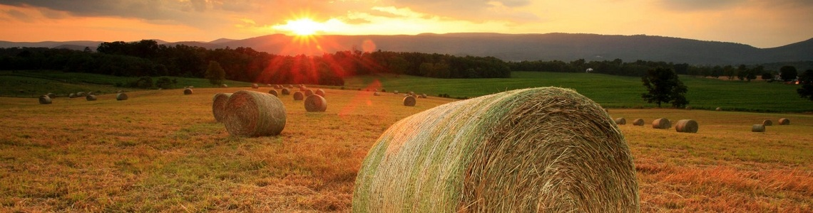
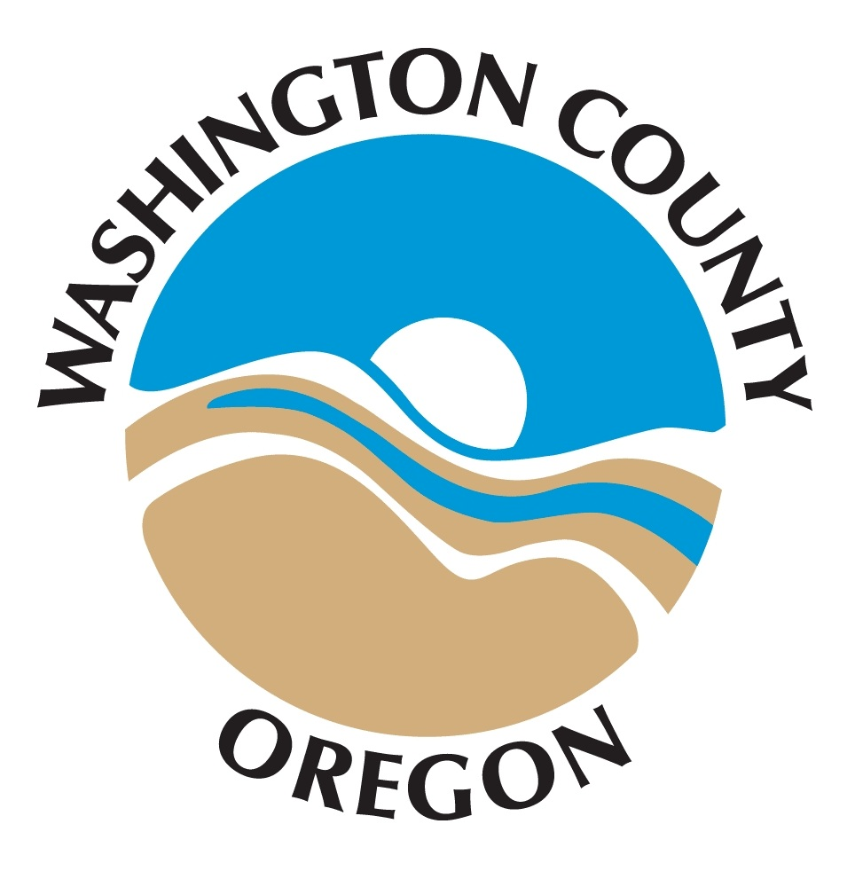

<section class="copy-section splash-page">
  <div class="container pre-post-padding">

    <div class="row main-copy">
    <div class="splash-image">
      <div class="hidden-xs hidden-sm col-sm-12">
      
      </div>
    </div>

    <div class="col-sm-3 sidebar">
      <div class="visible-sm visible-md visible-lg side-nav-logo">
      <a class="" href="/"></a>
      </div>
      {% include side-nav.html %}
    </div><!-- /.sidebar -->

    <div class="col-sm-9 main">

      <div class="header">
      <h1 class="title">Washington County seeks input on Transportation Futures Study</h1>
      <p class="lead description">For Immediate Release Thursday, April 23, 2015</p>
      </div>

      <div class="post">
      <p class="text-muted"><small>Sponsored by: Department of Land Use &amp; Transportation</small></p>
      


      <p>Washington County is evaluating long-term transportation investments and strategies needed to sustain economic health and quality of life in the coming decades. Over the next 18 months the forward-thinking <a href="#">Washington County Transportation Futures Study</a> will identify tradeoffs between alternative transportation investments to inform future choices and decisions.</p>
      <p>The study will examine the county's changing demographics, land use and economic conditions, transportation trends and new technologies, and how they might affect future travel. Evaluation of transportation alternatives will measure the effects on mobility, access, safety, efficiency, the environment, health, and other values important to the community.</p>
      <p>The county is seeking the public's input to help inform the study. "At this early stage in the study we're asking people to tell us what they value about living, working and traveling in Washington County today and their ideas for the future," said Andrew Singelakis, the county's Director of Land Use &amp; Transportation.</p>
      <p><strong>An online open house will be available for public input from 6 p.m. on Friday April 24 through Friday May 15, 2015 at the project website:</strong> <a id="CPNEWWIN:_blank^@CP___PAGEID=842789,http://www.WCTransportationFutures.org|" onmouseover=" return self.status='http://www.WCTransportationFutures.org'; " onmouseout=" return self.status=''; " href="javascript:HandleLink('cpe_0_0','CPNEWWIN:_blank^@CP___PAGEID=842789,http://www.WCTransportationFutures.org');"><strong>www.WCTransportationFutures.org</strong></a><strong>.</strong> The online open house will include information in English and Spanish, and the public is invited to submit input in either language.</p>
      <p>For more information, visit the project website at <a id="CPNEWWIN:_blank^@CP___PAGEID=842789,http://www.WCTransportationFutures.org|" onmouseover=" return self.status='http://www.WCTransportationFutures.org'; " onmouseout=" return self.status=''; " href="javascript:HandleLink('cpe_0_0','CPNEWWIN:_blank^@CP___PAGEID=842789,http://www.WCTransportationFutures.org');">www.WCTransportationFutures.org</a>&nbsp;or contact the project team at <a id="mailto:wctfs@co.washington.or.us|" href="mailto:wctfs@co.washington.or.us">wctfs@co.washington.or.us</a>&nbsp;or 503-846-4530.</p>

      <p>&nbsp;</p>

      <blockquote>Washington County is committed to planning and protecting the uses of the land and to building and maintaining a great transportation system--balancing care for the natural environment, economic development, safety and community livability.</blockquote>

      <h3>Contact:</h3>
      Stephen Roberts, Communications Coordinator
      <br>
      503-846-4963<br>
      <a href="mailto:stephen_roberts@co.washington.or.us">stephen_roberts@co.washington.or.us</a>

      </div><!-- /.post -->

    </div><!-- /.main -->

    </div><!-- /.row -->

  </div><!-- /.half-container -->
</section><!-- /.header-section -->
